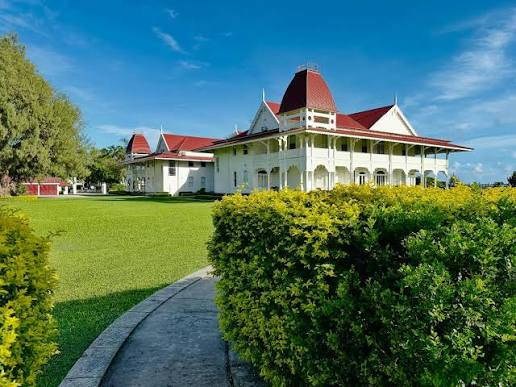
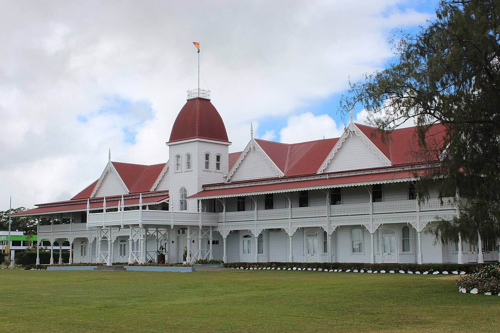

The Royal Palace


The Royal Palace in Nuku'alofa is a white wooden house with a red roof and wide verandas. It was put up in the 1860s and still belongs to the Tongan royal family. Visitors can't go inside, but you can admire it from the gate and walk around the grounds.